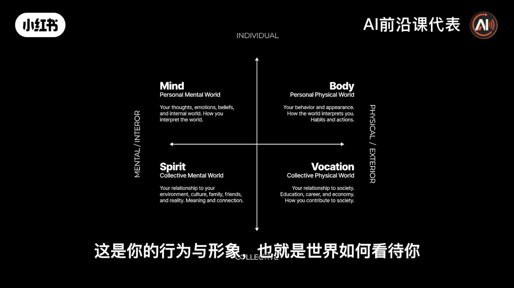
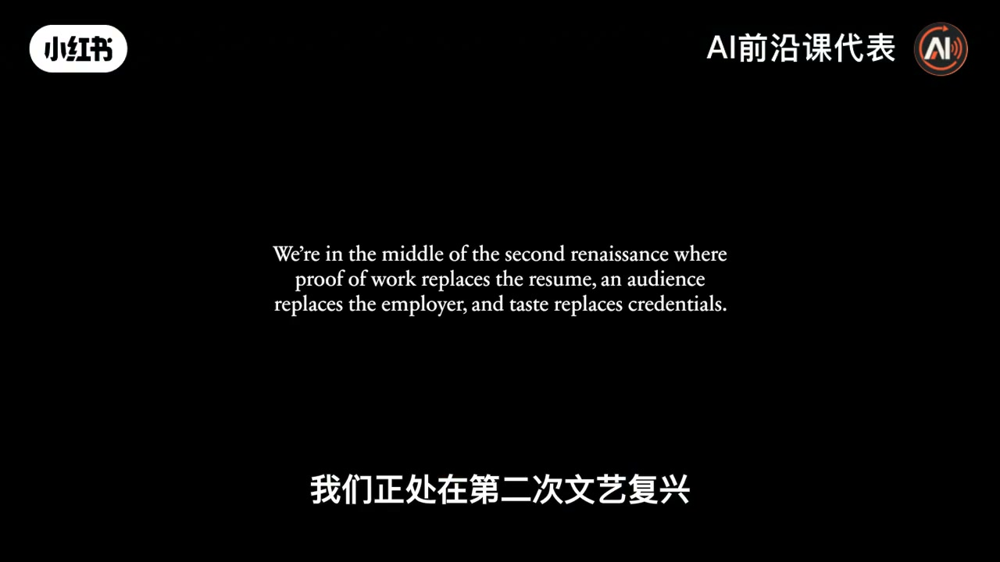
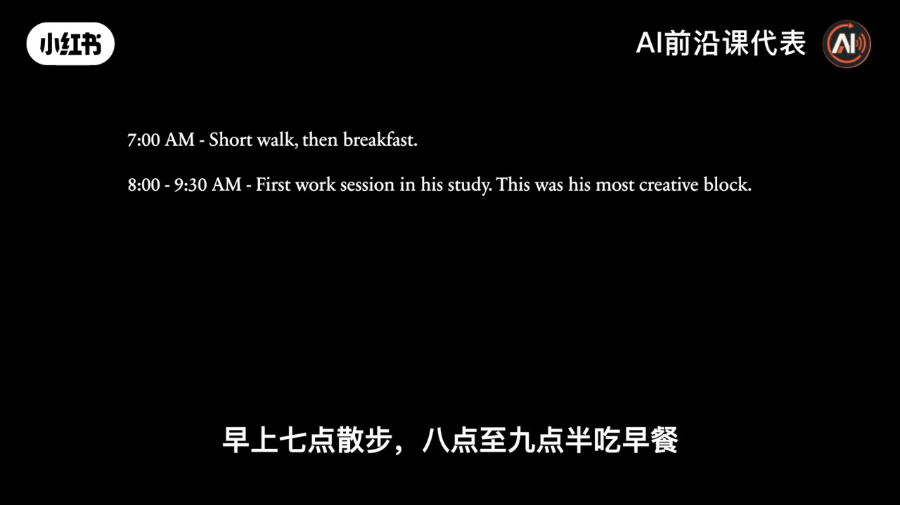
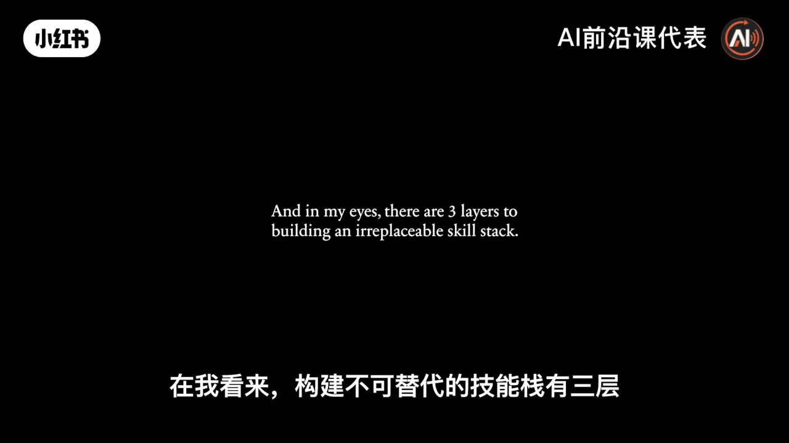
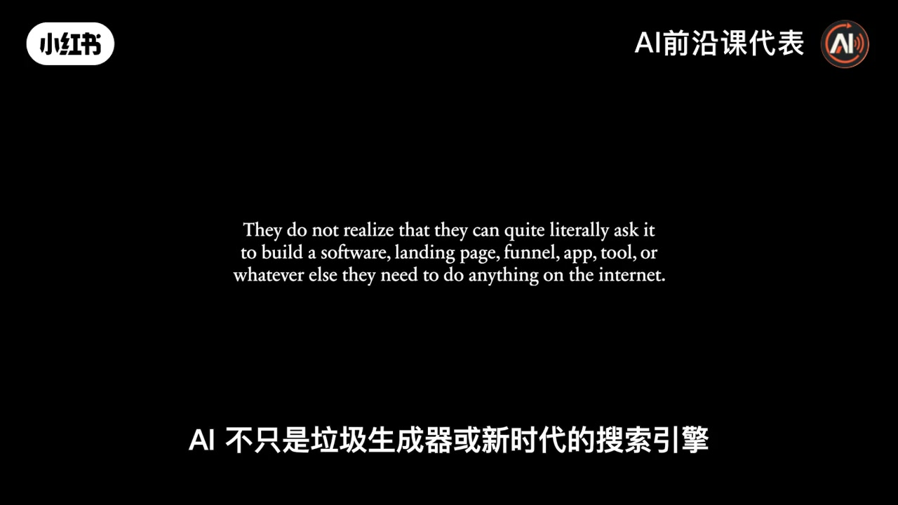

内容要点
知识结构
拒绝 AI 的「纯血统」与沉迷技术、不知 AI 在何处结束、人生从何处开始的「赛博」，都不是十年赢家；不必二选一。
心智/身体/精神意义/职业贡献缺一不可；只加「力量点」会输局。只搞钱不练身心、只修心不赚钱，都会撞墙。
今日意义上的「职业」约 250 年；工厂模式把教育变成训练。达芬奇式通才才是人类常态。AI 让一人可扛 10–50 人任务量。
AI 无观点，像一袋水需你塑造。最有趣的人走在两极：深创造与深体验。达尔文式短而深的创造块 + 散步反思；幸福来自张弛，而非平坦刺激。
Naval 式愿景：近 70 亿人对应近 70 亿「公司」。价值来自做中学与师徒，而非证书流水线。选一项工艺做深，兴趣喂养它。
①人类基础（销售/写作/心理）②独特执念与意义 ③工具技术（已被 AI 大幅压平）。别把身份押在 Photoshop 一类工具上。
学校教合规生存；真正教育是发现。带着目标自学、先做再学。加入创造者经济：创造可付费的价值，个人品牌是注意力入口。
AI 不只是垃圾生成器或新搜索；可共建软件漏斗。但仍需市场验证与品味。避坑：不知好坏、把初稿当终稿、妄想一次性替代自己。
兴趣广度提供跨域组合，工艺深度提供不可替代，AI 提供杠杆——三者齐备，才是他所说「未来十年更有优势」的具体含义。
图文实录
开场：未来十年，先别当前两类人
Dan Koe 开篇断言：未来人会越来越分裂成几类；若想在 AI 位置未定的十年里「赢」，必须避开前两类。第一类他用《哈利·波特》类比「纯血统」——今天拒绝 AI、渴望「干净/自然」生活的人；他们往往对互联网与社交媒体本身也充满矛盾。第二类是「赛博人」：一切决定交给技术，健康上也愿把任何东西塞进身体，生活被极致优化与极致挫败填满；他直言更警惕这类人——因为他们分不清 AI 在哪里结束、人生从哪里开始。
四象限现实：拒一半，就等于拒整个现实
他引入肯·威尔伯式四象限：个人内在（心智：想法情绪信念）、个人外在（身体：行为形象）、集体内在（精神/意义：文化家庭关系）、集体外在（职业：教育经济贡献）。「纯血统」倾向拒绝外在系统（钱、技术、进步）；「赛博」倾向拒绝内在系统。两者都在切掉半个现实。
技能树隐喻：只堆力量点，其他属性会拖垮你；现实里只砸钱做生意却不练脑子/身体/精神，很快触顶；反之只修精神却无经济造血，也会不必要地受苦。钱解决不了另一象限的问题，精神也替代不了职业象限。

第三条路：数字文艺复兴人
他提出第三选择：成为「传统又新」的人物——数字文艺复兴人。第二次工业革命用职业、职员与品味规训我们，最大的伤害是让人误以为机器人式专精是唯一活法：选一条路、当设计师/写手/工程师/销售，换尊敬与好生活。二十年前合理，现在可悲——因为那从来不是人类本来的生活方式。
有趣事实：今日意义上的「现代职业」大约只有 250 年。历史上艺人、农人、工匠往往掌握整条工作链，是思想家兼制作者。达芬奇进韦罗基奥工作室学画，却带走解剖、工程、雕塑与鲜艺——没人告诉他这些必须拆成互斥专业。工厂模式把教育变成训练、把通才变成螺丝钉；AI 站在门口时，只有愿意跨界的人能接住：一人可完成过去 10–50 人的任务量，关键是媒体注意力、人的心理与综合判断。

AI 无观点；生活要两极张弛
过去两百年工厂与科层已经把人训练成机器；与其恐惧「AI 让我们更机器」，不如承认我们早已如此。第二次争夺里，职业选择是：选工具、调教 AI，去管理整条行动链——你人生的工作。把焦点放在品味、方向与判断上：AI 的输出没有观点，像一袋水，必须由你塑造。
未来最有趣、最有价值的人会活在两极：一边深创造、深阅读、维持人性与新体验；一边用技术做出曾经不可能的事。他们也深休息。若每天都「开心」到麻木，刺激阈值会上移——这解释了为何有人关不掉手机。真正快乐往往出现在为在乎之事努力、受苦之后的另一侧。达尔文被举为范例：短而深的创造时段、家人时间、著名的思考步道；世界级创意者常是「深工 + 深休」而非无限加班。

单人事业：兴趣喂养工艺，而非证书喂养岗位
未来更多人会以「一人公司」或极小团队运转；Naval 的愿景被引用：世上近 70 亿人，某天或许近 70 亿家「公司」——人是企业式生物，在与现实试错中创造意义，而不是困在八小时重复任务。工业前你做完任务就结束，跟季节与能量走；价值来自学徒制（学生→旅人→师傅），在模仿中长出自己的品味，而非无意义证书。
如何成为这种数字人：你可以同时是写手、设计师、销售、影像作者……但注意力要压在一艘船上——一项你选择为之成名的工艺；其他兴趣参与、滋养它，而不是让你漂成无中心的多线程。
三层不可替代技能栈
网上许多创作者反 AI，是因为把「工具/特定做法」当成了身份；争论 AI 艺术真伪时，你往往并不在做你爱的工艺，只是在仇恨流量池里换钱与认同。你需要工艺，且落在：你在乎、你能独特做好、别人愿付费的交叉里。
三层栈：①人类基础——市场、销售、写作、表达、心理与关系；纯 AI 同质内容很快不稀罕，人愿意付钱的是理解人心后的创造与试错。②执念与独特意义——哲学、体育、设计、文学、食物等；把执念与第一层组合（如「有产品的哲学者」）才难挡。③技术工具——邮件电商、Photoshop、社媒运营等；过去最贵，现在 AI 压平。别把未来押在单一工具身份上；人类角色上移：写作者变编辑、剪辑者变导演。

危险的自学：目标滤网 + 先做后学
第二部分：成为「危险的自教者」。学校教你在社会中执行与基本生存，必要但不够；真正教育是发现——学习如何为自己开路。今天师傅可以是书与 YouTube，但必须有目标作滤网：创业者不会把时间滑给无关娱乐，而会搜能逼近目标的内容。他不在乎你是否用 AI 取信息，在乎你是否有目标、向目标工作，并用现实验证所学——因为蠢人与错误信息一直存在，AI 并不特殊。
创造者生意：创造可被付费的价值
有了工艺与自学能力，下一步是建立「人类的生意」、加入新经济。创造者正在替代旧教育与部分文化塑造：你从网站、YouTube、播客与推文学到的，往往多于课堂。他说的创造者不是网红模板，而是创造价值的人——解决问题、帮人同行，通常以产品或服务换金钱。James Clear 被举例：品牌背后是持续写作与材料，把工作推到更多人眼前。对没钱没起点、但愿学的人，社交媒体是注意力所在；个人品牌是当下高杠杆入口（他预告后续拆个人矩阵与内容方法）。
AI 实操：能建软件，但仍要市场与品味
许多人没意识到 AI 不只是垃圾生成器或新搜索引擎——你可以要求它共建软件、落地页、漏斗、应用。他演示思路：打开 Claude / Claude Code，从 TodoApp 问起，边做边问「最好办法是什么」、让它教你看不懂的步骤，几天后可能做出让自己吃惊的应用。但停在「AI 垃圾堆」的人，没意识到设计感与迭代仍在；应用数量暴增，不等于使用量与成功暴增。引用游戏公司语境：十年前能做类似游戏≠做成 GTA 级传播与组织。AI 是巨大优势，不是免除学习商业与关系的许可证。

用 AI 的避坑：标准、迭代、自动化边界
快速框架：先知道自己要什么、什么叫「好」——否则单人生意会把完美期望丢给 AI。每个回应都有缺陷，把第一稿当终稿会失败；功能、文案、细节都要你带着品味改。第三，试着把工作自动化，是为了快速分清「能自动」与「不能自动」——硬自动不可自动之物会翻车。对他而言，AI 擅长调研、归纳流程与运动/内容研究；写作本体他仍亲自控，因为读者在意是否有利，而非文章「看起来像不像 AI」。若不知从何开始：列出每天重复之事，问 AI 能否用指令/工具/软件违约式自动化，再像带新人一样训练它——小指令猜不到全流程，要向前迭代到「咣」一声跑通。
片尾预告后续：数字文艺复兴、如何有效学习、学什么技能、如何用 AI、如何清晰思考等；并提到其工具 Eden 与内容系统（属作者产品推广，作信息标注即可）。